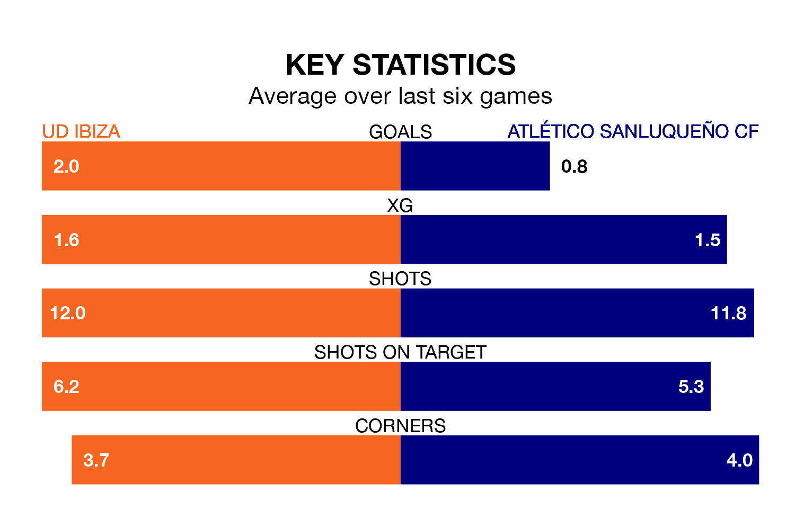

UD Ibiza are heavy favourites to keep all three points at home in Sunday's early kick-off against Atlético Sanluqueño CF.
Ibiza, who sit second in Primera Division RFEF Group 2 with 22 games played, are priced at 1.3 to seal victory at Estadio Municipal de Can Misses.
Sitting 12 places and 28 points behind them in the table, Atlético Sanluqueño are 9.5 to win with *Betting Company*, while the draw is at 4.3.
With 43 goals in 22 games so far this season, Ibiza are the league's second-highest scorers with 2.0 goals per game. And they are conceding fewer than average, letting in 16 goals at a rate of 0.7 per game.
Atlético Sanluqueño are also above average scorers, with 1.2 goals per game, compared to a league average of 1.1. They have also conceded 1.2 goals per game.
The home team are in fantastic form in Primera Division RFEF Group 2, with five wins and a draw from their last six games.
With two wins and two draws over that period, the visitors' form is much worse – they have taken eight points from 18, compared to Ibiza's 16.
Ibiza's last match was on February 4, a 1-0 win against Granada B, with Serge Patrick Njoh Soko getting the goal for Ibiza.
Atlético Sanluqueño beat Intercity 3-0 last time out, also on Sunday.
Updated: 14:59 (UTC), 05/02/24